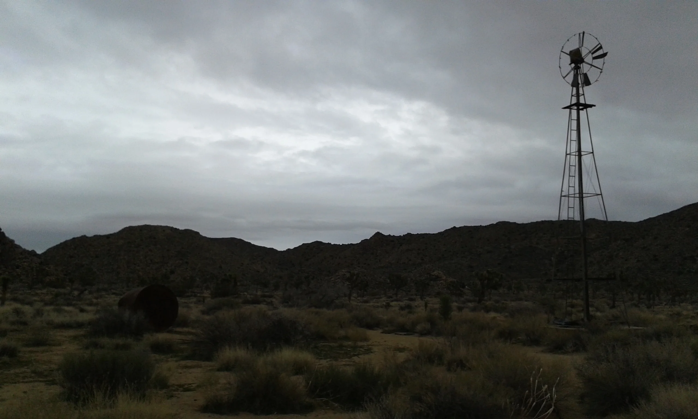

The californian road trip was my first time in the States. Despite all the clichés that a road trip in America can represent, I had one of the most mystical, intense and tiring experiences of my life as traveller. I am used to road tripping. I was been doing it quite extensively during my stay in Australia in 2013 with different people on different cars but never by myself, therefore I thought it was about time to start over, with less restrictions and more worries. Entering the US after an almost 12 hours flight was not easy at all. I had been hassled from the security once I entered the country for a while and after I was freed I had to take the public transportation towards East Hollywood, the area where I was staying, riding across sketchy areas of the city, block after block, after finally crossing the finish line, represented by the gigantic Hollywood sign on the hills. I think overall the bus trip lasted a bit over one hour and that was one of the time where I felt most unsafe while travelling. I have got to see poverty, misery and frustration that affect part of the country despite of being in one of the most richest states, but for some reason I found most of the people I met very social and that was very reassuring.
The first days I hanged out in LA while fighting with the jet lag but as soon as I sat on the car I rented, the real journey has started. After some hours on the car, driving somewhere east outside the city without even knowing exactly where (I think I was around the Coachella valley), I realized I was running out of food, phone battery and petrol and I started to panic, mostly because it was getting dark. I travelled with a paper map and some coordinates pinned on my phone (I decided not to buy a local sim card, bad choice), which corresponded to the places where technically I was allowed to sleep in my car, although in California it is mostly fordibben everywhere.
Sleeping alone in the middle of the desert was magical. In Europe there is no such a clear view of what it means to be thrown in the middle of nowhere, far from everyone, where everything I had in front of me was purely rocks, sand and a magnificent starry sky. I have been through many deserts in this trip and I am going to name them all just to have them in mind once again: Joshua Tree, Mojave, Death Valley and the Yosemite national park.
While driving my biggest source of entertainment was the radio but I have also brought some music with me and in particular I want to mention the album No Problem of Chet Baker featuring Duke Jordan, because for some reason that album was the beginning of my love relation with jazz music, that still lasts till nowadays.
San Francisco was halfway through this experience and sleeping in the car facing the Golden Gate and being woken up by an enchanting sunrise was definitely the highlight. Marouane, an old colleague I met in Paris over ten years before, came to pick me up that day late morning and took me around with his car. We stopped for lunch at a burger place and I felt amazed to notice how time sometimes does not affect human relations when people are smart enough to understand that we are who we meet, so why lose contact with people we feel a certain attachment to.
I started to drive down the SR1 towards Los Angeles where my flight was waiting for me the week after and I noticed that from that moment, my journey would have been harder. More inhabited places also means more control and more police. I had to struggle to find a shelter (=parking) for the night and in some cases I found myself driving around at night without exactly knowing where to stop. The Big Sur was excellent though. In particular I enjoyed visiting Henry Miller house and the library containing all his belongings.
So after all the last question I have left is what to read on this unique trip: during my studies I never had the chance to learn american literature properly, therefore I opted for the most classic of all the american road-trip books, written by the great Jack Kerouac in 1957, the manifesto of the beat generation, a book that personally never made me feel alone also in the hardest moment and it provided me with a unique bop soundtrack.
When I look back at the trip I made in the States, my memory goes to certain songs that shaped my experience there. Some classics like The Hole, Malibu and something recent like Foxygen, Livin'a Lie are the ones I have in mind now, of course except the great Duke Jordan piano lines and all the great cool jazz era, which is probably the most memorable music this part of the world has made.
There is a spot in the Death Valley in California, where a young reactionary couple was spot on making love unashamedly, roughly and completely lost under the Californian sun, on the sand, in the wilderness. The scene was shot in Zabriskie point, an erosional, colorful and mystical landscape in the middle of the desert, a place that the Italian filmmaker Michelangelo Antonioni chose for his movie of the same name that gives a perfect representation of what was California back in the 70's. When I crossed the valley from south to north, starting from Baker up north and turning left almost half way through to reach Bakersfield, I thought I could not missed that place for its importance in modern cinema and for its iconic scenes and gran finale when an entire building was blown up (any reference to things or real events is purely coincidental) in slow motion with the spacey Pink Floyd soundtrack being used to backtrack this one-take-scene.
Cool Jazz is mostly identified as west-coast jazz, a genre that comes mostly from bebop developing a smooth, relaxed and maybe more melodic personal approach to the topic, all features that can maybe reflect the west coast way of living. The genre sees is birthplace around the area of San Francisco during the '50, identified through works like "Birth of Cool" (1959) of Miles Davis and other musicians like Gerry Mulligan, Chet Baker and Chico Hamilton. The sound of cool jazz and what diversify the genre the most, it's the focus on the rhythmical part and the use of instruments that would normally be unconventional for the genre (e.g. violin).
A beat is a main accent or rhythmic unit in music or poetry according to the Oxford languages. The name beat generation defines a countercultural movement and a group of artists of various kind (but mainly writers) known as the Beatnik that rejected the standard capitalistic and material way of living, giving more importance to other aspect of life like spirituality (often explored through the use of drugs) and a more "sober" general attitude. The word was coined by Jack Kerouac, probably the greatest exponent of the movement, together with Allen Ginsberg, William S. Burroughs and Neal Cassady. Another important feature of the beat is the connection between the movement and jazz music (especially bebop and cool jazz). Kerouac himself took huge inspiration from that kind of music as his theory of breath and speech, a technique where the natural human breath becomes the main axis of the literary structure, can prove. Mexico City Blues (Kerouac, 1959) is a clear example of this creative process. The beat left a huge mark on the subsequent hippie culture that took inspiration from the beats to a big extent.
While on my way driving down on Highway 1 from San Francisco to LA, I drove through one of the most spectacular landscapes California can offer, with its green hills and its drastic cliffs literally crushing down into the Pacific ocean and with some of the most majestic sunset I have probably ever seen in my life. This region is a bit more than 100km long and it is called Big Sur. This land was originally populated by natives like the Ohlone, the Esselen and the Salinian, went under Spanish and Mexican control afterwards (the name is Spanish and it means "big south") and finally became part of the US as an aftermath of the war between US and Mexico of 1848. Henry Miller is one of the greatest writers that United States ever had. Born in New York, he has lived in Europe for a while (Paris) and after coming back to America, he decided to settle in the Big Sur in 1944. Funny enough or maybe not so funny, his most famous books called the Tropic books (Tropic of Cancer and Tropic of Capricorn) where banned in the United States until 1964 for explicit language and obscenity. Miller extensively wrote about his Big Sur, especially in the work Big Sur and the Oranges of Hieronymus Bosch, where he somehow compares the region to the paradise that Bosch depicted mostly in his Garden of Earthly Delights. The day I crossed the area, I went to visit the Henry Miller Memorial Library that Emil White built for his own purpose and was dedicated to Miller after the artist passed away. Despite of the fact that the library seems to be still a place full of cultural life itself, during my short visiting on a sunny morning of February, I had the pleasure to feel the stillness and all the nature around the place and I could picture the writer in my mind, wandering around the hills of this beautiful piece of the world.